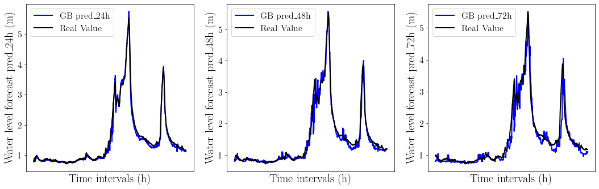

Machine Learning and AutoML for flood time series forecasting
In order to provide robust forecasts by machine learning, expert knowledge in tasks involving data mining, data pre-processing, feature engineering, model selection, hyperparameter optimization, and final result interpretation is required. Automated Machine Learning (AutoML) has appeared as a support for all Data Scientists to save time and effort on those tasks.In this project, the evaluation of various supervised machine learning algorithms and AutoML tools on the flood dataset is carried out to analyse their performance and demonstrate the strengths and weaknesses of different approaches.
The objective is to forecast water stream level at a 24-, 48-, 72 hourly time scale in the example on Ebro River at Zaragoza based on the hackathon organised by ITANNOVA. Through this project, a comprehension of what is the wide range of predictor components is to be considered in the forecast of the above-mentioned dependent variable and how much these predictors influence the response variables.
Furthermore, intent is made to identify the best workflow by testing diverse ML algorithms and AutoML tools. After finding the best ML pipeline for the water stream forecast (dependent variable), the predicted value is contrasted with the original values and baseline model. Finally, the performance of the forecasts is evaluated.
This project is a Master's Degree in Big Data Analytics Final Project .